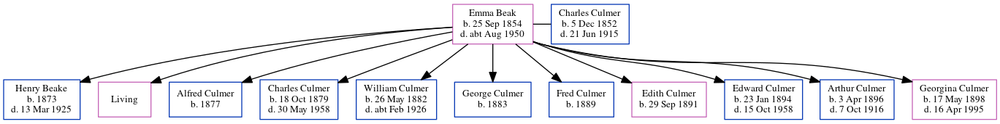

Emma Culmer (née Beak) 1854 - c1950
[ Home ] | [ Calendar ] | [ Surnames Index ] | [ Errors ] | [ Family History ]Emma Beak, the wife of Charles Culmer (the great-great-uncle of Nigel Horne), was born in Preston, Kent, England on 25 Sept 18541,2,3,4,5,6,7,8,9, was baptised there on 28 Oct 1855 and also married Charles (an agricultural labourer with whom she had 11 children: Henry Gage, Charlotte Ann, Alfred, Charles, William James, George, Fred, Edith Emily, Edward, Arthur Thomas and Georgina Hannah, along with 1 surviving child) there at St Mildred's Church on 22 Aug 187411 (Jul/Aug/Sep).
During her life, she was living at her birthplace in 18611 and in 18712; at The Square, Stourmouth, Kent, England on 3 Apr 188115; in Westmarsh, Kent, England on 5 Apr 189113; at 1 Chalk Hole Cottages, Flete, Kent on 31 Mar 190112; at Newports Lydden, Flete, Kent on 2 Apr 191114; and at 3 Lydden Farm Cottage, Flete, Kent on 29 Sept 19397 following the death of her husband on 21 Jun 1915.
She died c. Aug 1950 in Barnet, London, England10.
Children
- Henry Gage was born in 1873
- Alfred was born in 1877
- Charles was born on 18 Oct 1879
- William James was born on 26 May 1882
- George was born in 1883
- Fred was born in 1889
- Edith Emily was born on 29 Sept 1891
- Edward was born on 23 Jan 1894
- Arthur Thomas was born on 3 Apr 1896
- Georgina Hannah was born on 17 May 1898
Citations
- 1861 England Census Online publication - Provo, UT, USA: The Generations Network, Inc., 2005.Original data - Census Returns of England and Wales, 1861. Kew, Surrey, England: The National Archives of the UK (TNA): Public Record Office (PRO), 1861. Data imaged from the National
- 1871 England Census Online publication - Provo, UT, USA: The Generations Network, Inc., 2004.Original data - Census Returns of England and Wales, 1871. Kew, Surrey, England: The National Archives of the UK (TNA): Public Record Office (PRO), 1871. Data imaged from the National
- 1881 England Census Online publication - Provo, UT, USA: The Generations Network, Inc., 2004. 1881 British Isles Census Index provided by The Church of Jesus Christ of Latter-day Saints © Copyright 1999 Intellectual Reserve, Inc. All rights reserved. All use is subject to the
- 1891 England Census Online publication - Provo, UT, USA: The Generations Network, Inc., 2005.Original data - Census Returns of England and Wales, 1891. Kew, Surrey, England: The National Archives of the UK (TNA): Public Record Office (PRO), 1891. Data imaged from The National
- 1901 England Census Online publication - Provo, UT, USA: The Generations Network, Inc., 2005.Original data - Census Returns of England and Wales, 1901. Kew, Surrey, England: The National Archives of the UK (TNA): Public Record Office (PRO), 1901. Data imaged from the National
- 1911 England Census Online publication - Provo, UT, USA: Ancestry.com Operations, Inc., 2011.Original data - Census Returns of England and Wales, 1911. Kew, Surrey, England: The National Archives of the UK (TNA), 1911. Data imaged from the National Archives, London, England.
- 1939 Register - Findmypast (was recorded at this address)
- England & Wales, FreeBMD Birth Index, 1837-1915 Online publication - Provo, UT, USA: The Generations Network, Inc., 2006.Original data - General Register Office. England and Wales Civil Registration Indexes. London, England: General Register Office. © Crown copyright. Published by permission of the Cont
- Kent, England, Tyler Index to Parish Registers, 1538-1874 Online publication - Provo, UT, USA: Ancestry.com Operations, Inc., 2010. This collection was indexed by Ancestry World Archives Project contributors.Original data - Frank Watt Tyler. The Tyler Collection. Canterbury, Kent, England: The Institute of Herald
- England & Wales deaths 1837-2007 - Findmypast
- England & Wales Marriages 1837-2005 - Findmypast
- 1901 England, Wales & Scotland Census - Findmypast (was age 46 and the wife of the head of the household)
- 1891 England, Wales & Scotland Census - Findmypast (was age 36 and the wife of the head of the household)
- 1911 Census for England & Wales - Findmypast (was age 55 and the wife of the head of the household)
- 1881 England, Wales & Scotland Census - Findmypast (was age 25 and the wife of the head of the household)
Media
1939 Register Transcription - TNA-R39-1752-1752G-014-01
England & Wales deaths 1837-2007 - BMD/D/1950/3/AZ/000176/110
Canterbury Marriages Transcription - GBPRS-CANT-M-97051016-1
1911 Census for England & Wales - GBC/1911/RG14/04484/0167/2
1891 England, Wales & Scotland Census - GBC-1891-0005918222
Family Tree
Map
Generated by ged2site. Last updated on Jul 3, 2024
Known Issues
Baptism information not used to determine a parent
Apr 2, 1911: not living at same address as spouse Charles Culmer ('Newports Lydden, Flete, Kent, England'/'Newport Cottage, Lydden Farm, Garlinge, Kent, England')
Apr 2, 1911: not living at same address as spouse Charles Culmer ('Newports Lydden, Flete, Kent, England'/'Newports Lydden, Garlinge, Kent, England')
No records of living with anyone